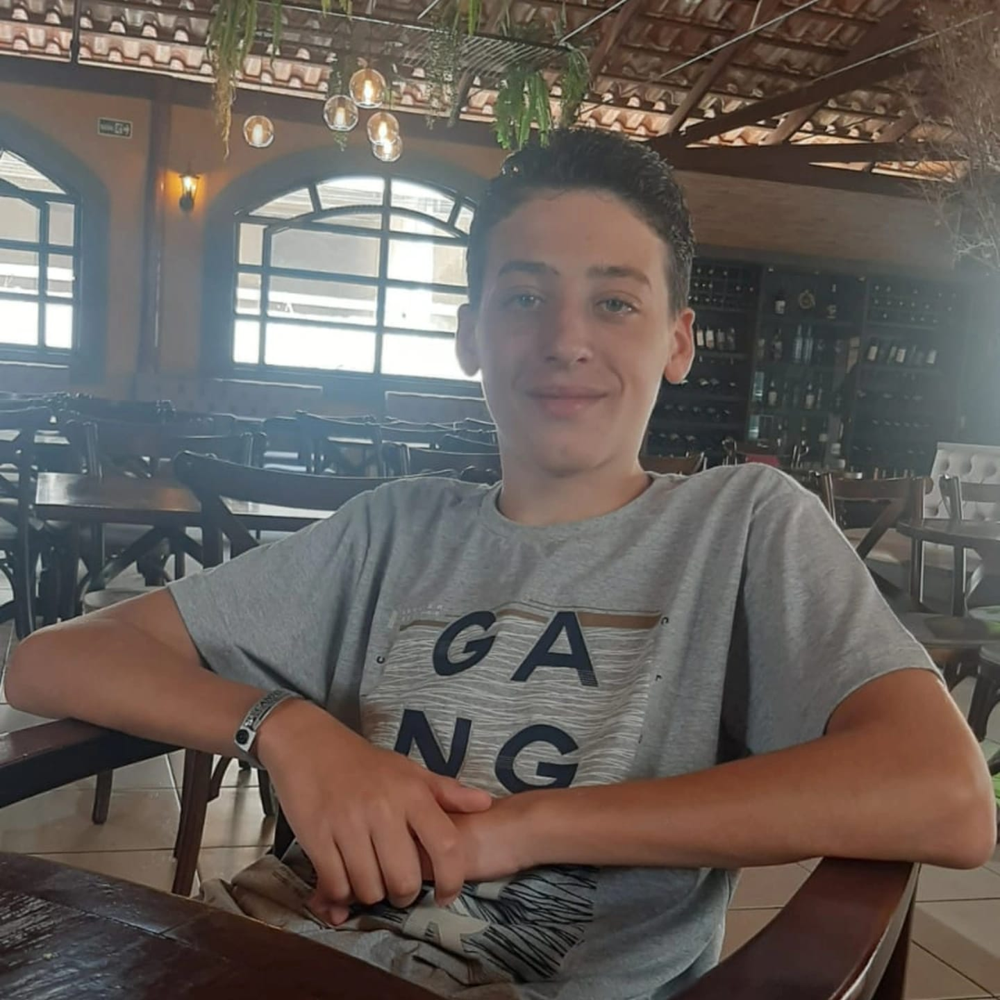

Desde sempre gostei de mexer com tecnologia. Celulares, tablets, computadores, embora isso não signifique que eu seja bom mexendo nessas máquinas, nos dispositivos em si. Digamos que o hardware nunca foi minha praia. Gostava mesmo era de fazer jogos no Scratch, com programação em blocos, e daí pensei que eu pudesse trabalhar com isso no futuro.
Minha visão de emprego era só “ser programador”. Nem sabia exatamente o que teria que fazer até realmente estudar sobre o assunto. Agora que já estou mais decidido quanto ao meu futuro, o curso Desenvolvimento de Sistemas no Senai é muito relevante, pois pode me transformar em um profissional pronto para o mercado de trabalho, mas não pretendo parar só no curso técnico.
Depois do Senai, quero cursar Ciência da Computação na UFJF, provavelmente passando pelo PISM. Com a capacidade técnica e a visibilidade do Senai, somado com os conhecimentos que espero obter na faculdade, acredito que teria um currículo bom o suficiente para ter várias oportunidades de emprego.
No passado, como eu fazia jogos no Scratch, queria trabalhar com desenvolvimento de jogos. No entanto, hoje percebo que existem oportunidades mais rentáveis em outras áreas, como no desenvolvimento de sites e aplicativos, cybersegurança e demais soluções para empresas. Conforme for estudando, poderei me aprofundar nessas áreas. Por fim, só é necessário conhecimento de inglês, o qual eu já tenho bastante, mas ainda vou fazer um curso para completar.
Daqui a 10 anos, eu espero estar em um emprego bom e estável, com uma boa renda. Já teria completado a faculdade e estaria morando sozinho, talvez até mesmo fora de Petrópolis ou do Brasil.
Nesse meu projeto, o Ensino Médio acaba sendo essencial, não só pois faz parte da educação básica, mas também é requisito de entrada em diversos empregos e faculdades. O curso do Senai também é muito importante, pois ele me preparará e me ensinará como trabalhar no mercado de trabalho. Espero aprender a fazer sites, aplicativos, trabalhar com diversas linguagens de programação, e todos os demais conhecimentos e habilidades necessárias para, em tese, sair daqui com um emprego.